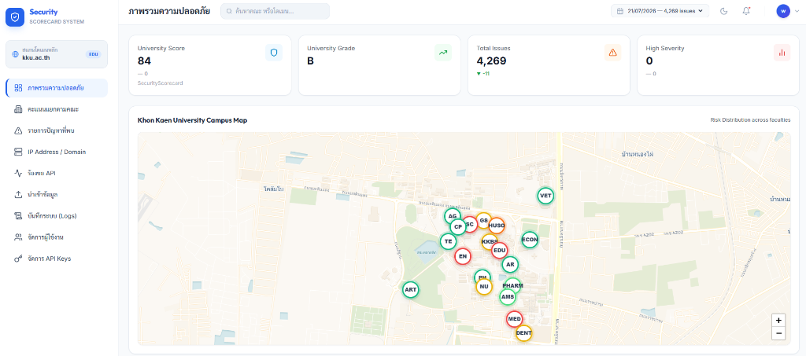
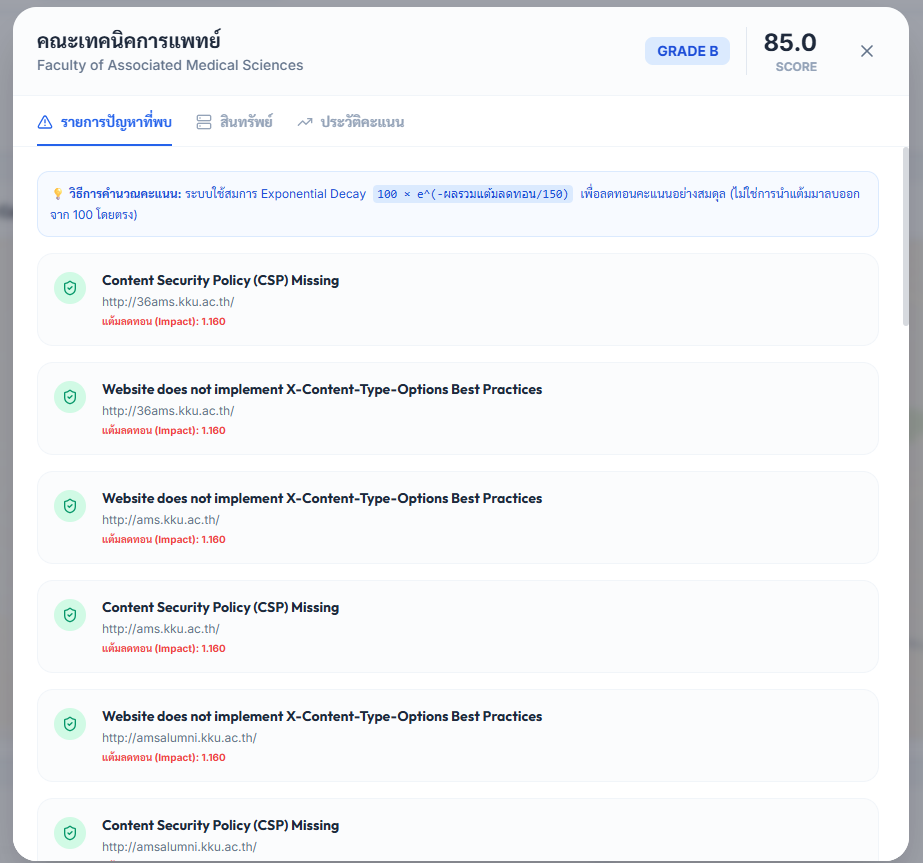
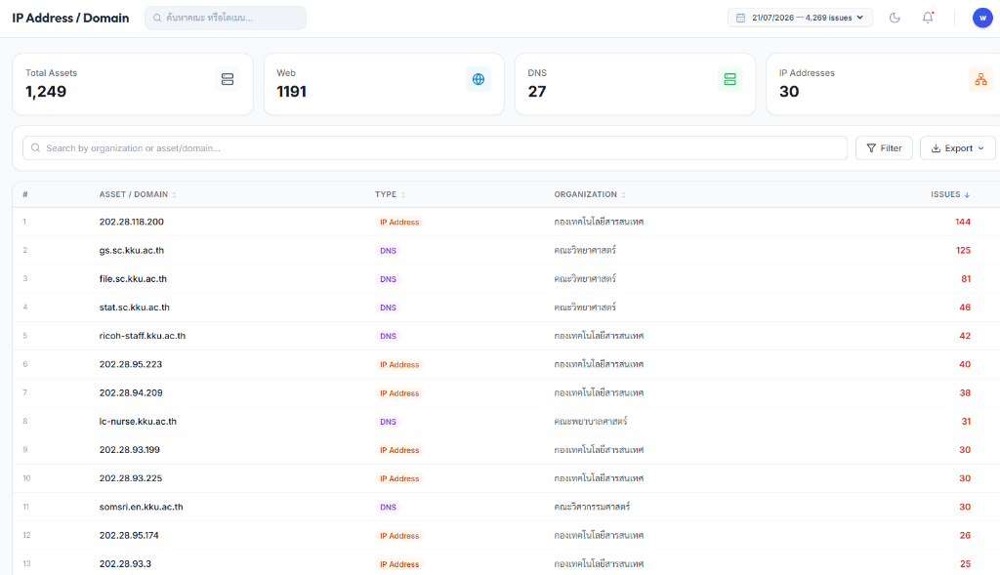
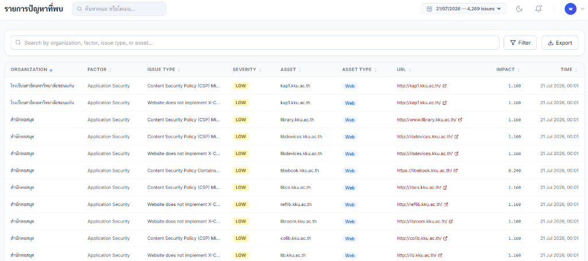

หากหน่วยงานย่อยเพียงจุดเดียวมีช่องโหว่ อาจกลายเป็นประตูทางเข้า (Entry Point) ให้ผู้ไม่ประสงค์ดีโจมตีเครือข่ายหลักทั้งหมดของมหาวิทยาลัยได้

พัฒนาและจำลองสภาพแวดล้อมเครือข่ายด้วย Docker-compose เพื่อความเสถียรและแยกการประมวลผลออกเป็นบริการย่อย (Services)


* คลิกที่ปุ่มด้านบนเพื่อเปิดหน้าแดชบอร์ดรายงานช่องโหว่ความเสี่ยงแยกตามคณะในแท็บใหม่